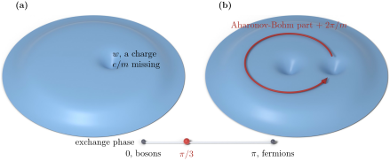

Page 11 of 13 of this session
4.18 Berry phase, fractional charge, and anyonic statistics
How can a Berry phase measure the charge of an excitation, and its statistics? We will now see that a quasihole that goes once around a loop gets the Aharonov-Bohm phase of a charge of magnitude \(e/m\). A second quasihole inside the loop adds the phase \(2\pi/m\), which for \(m>1\) is neither the phase of bosons nor the phase of fermions.
\[\Psi_m(z_1,\dots,z_N) = \prod_{i<j}(z_i-z_j)^m\; \exp\!\left(-\sum_i \frac{|z_i|^2}{4\ell_B^2}\right), \tag{4.12}\]
\[\Psi_{\text{qh}}(w) = \prod_i (z_i-w) \; \Psi_m(z_1,\dots,z_N). \tag{4.14}\]
These are the Laughlin state of Section 4.16 at the filling \(\nu=1/m\), with an odd integer \(m\), and the same state with a quasihole at the position \(w\), from Section 4.17. The position of the electron \(i\) is the complex number \(z_i=x_i+iy_i\), and the factor \(\prod_i(z_i-w)\) pushes the electrons away from \(w\).
We now use the Berry phase to show directly two things. It is the same object that we used for the Zak phase (3.6) and, as a curvature, for the Chern number (3.4). First, the quasihole excitation of Section 4.17 has a fraction of the electron charge. Second, a pair of them follow neither fermionic nor bosonic exchange statistics.
Fractional charge. We take the wavefunction with one quasihole (4.14) and move \(w\) adiabatically around a closed loop. We write \(w=|w|e^{i\theta}\) and compute the Berry phase that we obtain when \(\theta\) goes from \(0\) to \(2\pi\). The result is an Aharonov-Bohm phase, proportional to the flux enclosed by the loop. It has an extra prefactor \(1/m\) with respect to the phase that an ordinary particle with charge \(e\) would get around the same loop. The Aharonov-Bohm phase for a particle with charge \(q\) around an enclosed flux \(\Phi\) is \(2\pi q\Phi/\Phi_0\), where \(\Phi_0\) is the flux quantum, so the extra factor \(1/m\) that we find is a direct and clear statement about the charge of the excitation.
A quasihole of the Laughlin state at the filling \(\nu=1/m\) has a charge of magnitude
\[q_{\text{qh}} = \frac{e}{m}. \tag{4.15}\]
The Berry phase of a quasihole that goes once around a loop is the Aharonov-Bohm phase of this charge, which in size is \(1/m\) of the phase of an electron on the same loop.
The steps From the Berry phase of a loop to the charge (4.15)
We take the normalized state \(|\psi_w\rangle\) with one quasihole (4.14) and move it on the loop \(w=|w|e^{i\theta}\), with \(\theta\) from \(0\) to \(2\pi\). The Berry phase is defined as for the Zak phase (3.6),
\[\gamma = i\oint\langle\psi_w|\partial_\theta\psi_w\rangle\,d\theta .\]
Only the factor \(\prod_i(z_i-w)\) depends on \(\theta\), and \(\partial_\theta w=iw\), so
\[\partial_\theta\prod_i(z_i-w) = \prod_i(z_i-w)\,\sum_i\frac{-iw}{z_i-w}.\]
The norm of the state also depends on \(\theta\). For a normalized state the overlap \(\langle\psi_w|\partial_\theta\psi_w\rangle\) is purely imaginary, so the norm only removes the real part of the term above, and what remains is
\[\gamma = \oint \Big\langle \sum_i \mathrm{Re}\,\frac{w}{z_i-w}\Big\rangle\, d\theta,\]
where the mean is taken in the state with the quasihole at \(w\).
Let us take one electron first. For \(|z|<|w|\) we expand \(w/(z-w)=-1-z/w-(z/w)^2-\dots\), and for \(|z|>|w|\) we expand \(w/(z-w)=w/z+(w/z)^2+\dots\). The powers of \(z/w\) and of \(w/z\) vanish when we average over the angle of \(z\). So an electron inside the loop gives \(-1\), and an electron outside gives \(0\). This needs a density that is the same in every direction around the origin. In the bulk, the state with the quasihole has the uniform density of the droplet plus the dimple around \(w\). The dimple adds nothing, since it is round around \(w\) and \(w/(z-w)\) averages to zero on every circle around \(w\). So
\[\gamma = -2\pi\,\langle N_{\text{in}}\rangle,\]
with \(\langle N_{\text{in}}\rangle\) the number of electrons inside the loop for the density without the quasihole at \(w\), since its own dimple adds nothing. The simplest case is \(m=1\), the filled level, where the state with the quasihole is a Slater determinant and the phase can be computed with no approximation. For \(40\) electrons and \(|w|=2.5\,\ell_B\) it gives \(\gamma/2\pi=-3.125\), which is \(-|w|^2/2\ell_B^2\), the number of electrons that the filled level has inside the loop, with a minus sign. In the state with the quasihole the loop holds only \(2.71\) electrons, since part of the dimple lies inside it, so this is not the number that counts.
For the Laughlin state the density is \(\nu/(2\pi\ell_B^2)\) with \(\nu=1/m\). The loop holds the flux \(\Phi=B\pi|w|^2\), and the flux quantum is \(\Phi_0=h/e=2\pi\ell_B^2B\), so \(\langle N_{\text{in}}\rangle=\nu\,\Phi/\Phi_0\) and
\[|\gamma| = 2\pi\,\frac{1}{m}\,\frac{\Phi}{\Phi_0}.\]
A particle of charge \(q\) on the same loop gets the Aharonov-Bohm phase \(2\pi q\Phi/\Phi_0\), in the units \(e=1\) of these pages, so the quasihole has the charge \(1/m\) in size, which is (4.15). The sign of \(\gamma\) changes with the sense of the loop and with the sign of the charge of the electrons, so we only use its size.
For these excitations the electron is no longer the basic unit of charge, and the unit is a real fraction of it.
Anyonic statistics. Now we take a wavefunction with two quasiholes, one fixed at the origin and one at \(w\), and we move the second one in a loop around the first, again with \(w=|w|e^{i\theta}\). The Berry phase that we obtain has two parts. The first part is the same Aharonov-Bohm contribution as before, given by the charge times the enclosed flux. The second part is an additional statistical phase, which comes only from the fact that one quasiparticle goes around the other.
When one quasihole goes once around another, the Berry phase has, on top of the Aharonov-Bohm part, the statistical phase
\[\theta_{\text{stat}} = \frac{2\pi}{m}. \tag{4.16}\]
The exchange of two quasiholes is half of this loop, so the exchange phase is \(\pi/m\). For \(m>1\) it lies between the phase \(0\) of bosons and the phase \(\pi\) of fermions.
To compare with the familiar cases, note that to move one quasiparticle all the way around another is two exchanges, one after the other, so the exchange phase is half of (4.16), which is \(\pi/m\). For ordinary fermions the exchange of two particles gives a phase \(\pi\), and for bosons it gives a phase \(0\). The exchange phase \(\pi/m\) is neither of the two, and it goes from one familiar case to the other as \(m\) grows, as shown in Figure 4.6.
These quasiparticles are what are called anyons, which are excitations with exchange statistics that go continuously from the fermionic to the bosonic case. They are labeled by the same integer \(m\) that fixed the filling fraction. We started from a many-body wavefunction built only from ordinary electrons, which are real fermions, and from the correlations of this wavefunction we obtained excitations that are neither fermions nor bosons. This is the simplest example of fractionalization in a quantum many-body system that we will meet in this course.

In an electronic Fabry-Perot interferometer at the filling \(\nu=1/3\), the edge mode shows strong Aharonov-Bohm interference, and this interference is interrupted by discrete phase slips. The slips are consistent with an anyonic phase of \(2\pi/3\). In our reading, a slip happens when the number of quasiparticles inside the loop of the edge mode changes by one, and \(2\pi/3\) is the statistical phase (4.16) for \(m=3\). The measurement is in this article.
One quasihole goes once around another. The Berry phase gets the statistical part
\[\theta_{\text{stat}}=\frac{2\pi}{m}.\]
What are this phase and the exchange phase for \(m=3\)?
Show the answers
- A. ✗ False
This is false. These are the phases of two fermions, which is the case \(m=1\). For \(m=3\) the braid phase \(2\pi/m\) is \(2\pi/3\).
- B. ✗ False
This is false. A full braid is two exchanges. If one exchange gave \(2\pi/3\), two of them would give \(4\pi/3\) and not \(2\pi/3\).
- C. ✓ True
This is true. A full braid is two exchanges, so the exchange phase is half of the braid phase \(2\pi/m\), which is \(\pi/m=\pi/3\).
The exchange phase is \(\pi/m\). Which familiar particles do we recover for \(m=1\) and for very large \(m\)?
Show the answers
- A. ✗ False
This is false. For \(m=1\) the phase is \(\pi\), so the wavefunction gets \(e^{i\pi}=-1\), which is a fermion. This is the filled Landau level.
- B. ✗ False
This is false. For \(m=100\) the phase is \(\pi/100\), so the wavefunction gets \(e^{i\pi/100}\approx1\) and not \(-1\). This is almost a boson.
- C. ✓ True
This is true. For \(m=1\) the phase is \(\pi\), which is the fermion, and the Laughlin state is the filled Landau level. For large \(m\) the phase goes to \(0\), which is the boson.
A second quasihole sits at the origin, and the first one goes around it on a loop of radius \(|w|\). The loop encloses the whole dimple of the second quasihole and stays in the bulk of the droplet. For \(m=3\) and \(20\) electrons, the discs of radius \(5\) to \(8\,\ell_B\) around a quasihole hold about \(1/3\) of an electron less, \(0.32\) to \(0.34\) on average in four runs of a Monte Carlo sampling. In this small droplet a disc larger than \(8\,\ell_B\) already reaches the edge, so a larger loop needs more electrons. The second quasihole removes the charge \(e/m\) from the region inside the loop. With the result \(\gamma=-2\pi\langle N_{\text{in}}\rangle\) of the steps above, show that the Berry phase of the loop changes by \(2\pi/m\) when the second quasihole is added. What is the exchange phase for \(m=3\)?
Solution
Without the second quasihole, and without the dimple of the moving one, the loop holds \(\langle N_{\text{in}}\rangle=\nu\,\Phi/\Phi_0\) electrons. The second quasihole removes \(1/m\) of an electron from the region around the origin, and the loop encloses all of this region, so \(\langle N_{\text{in}}\rangle\) goes down by \(1/m\). Its dimple is round around the origin, so the steps above still hold. The phase \(-2\pi\langle N_{\text{in}}\rangle\) then changes by
\[\Delta\gamma = -2\pi\left(-\frac1m\right) = \frac{2\pi}{m},\]
which is (4.16). The Aharonov-Bohm part comes from the uniform density, and it is the same with and without the second quasihole, so this change is the statistical phase. For \(m=3\) it is \(2\pi/3\), and the exchange is half of the loop, so the exchange phase is \(\pi/3\). Its sign changes with the sense of the loop, as the sign of \(\gamma\) does.
For \(m=1\) the same steps give \(2\pi\), which is twice the exchange phase \(\pi\) of fermions. The filled level with \(40\) electrons, where every state is a Slater determinant, gives the change \(1.000\) in units of \(2\pi\) for loops of radius \(5\) and \(6\,\ell_B\). In our reading, the change of \(2\pi/3\) for \(m=3\) is the phase slip of the interferometer of the lab box above, when the number of quasiparticles inside its loop changes by one.
- In Section 5.19 the Majoranas of a superconductor are non-Abelian anyons, and braiding them is the basis of topological quantum computing.
- In Section 8.2 the electron of a spin liquid splits into a spinon and a chargon, which is a second form of fractionalization.
- In Section 10.6 phases with a topological invariant are the ones that a local order parameter cannot separate.